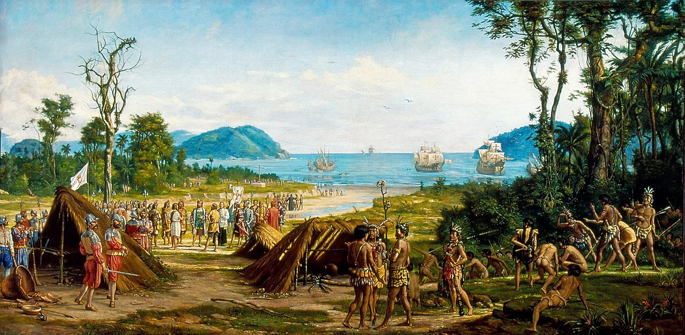
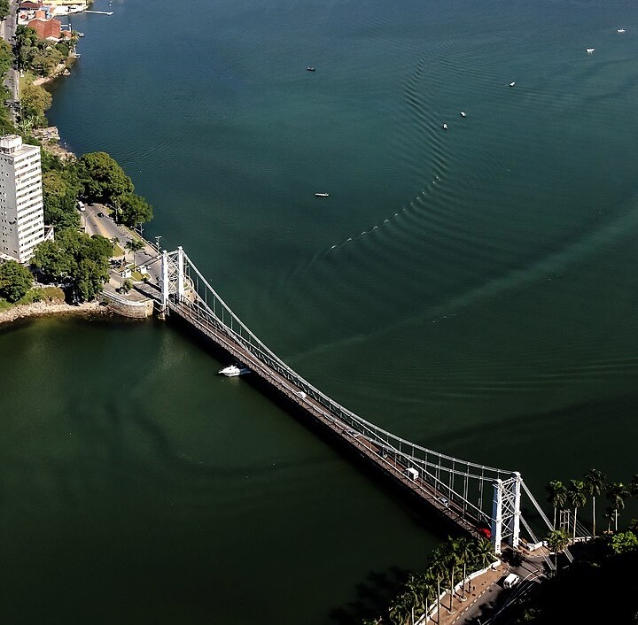

São Vicente é um município da Microrregião de Santos, na Região Metropolitana da Baixada Santista, no estado de São Paulo, no Brasil. A sua população estimada pelo Instituto Brasileiro de Geografia e Estatística para 1° de Julho de 2017 era de 360 380 habitantes, sendo a segunda cidade mais populosa do litoral paulista, ficando atrás apenas de Santos. A sua área é de 148,424 km², o que resulta numa densidade demográfica de 2 378,59 habitantes por quilômetro quadrado.
Surgida no ano de 1532, foi a primeira vila da América Portuguesa, fundada por Martim Afonso de Sousa conforme ordens do rei de Portugal, dom João III, em uma ilha descoberta na expedição de Gaspar de Lemos, em 1502, que a batizou em homenagem a São Vicente Mártir (de acordo com registros de Américo Vespúcio). Em 22 de agosto de 1532, ocorreu a primeira eleição da América, em que foram escolhidos os primeiros oficiais da Câmara, atualmente equivalente ao cargo de vereador. Hoje, a cidade, situada na metade ocidental da Ilha de São Vicente, que compartilha com Santos, baseia a sua economia no comércio e turismo.
Parte do município se estende pelo continente, em duas porções distintas: o bairro de Japuí, ligado à cidade por uma ponte construída em 1914 pelo engenheiro Saturnino de Brito no caminho que ruma à Praia Grande, e o distrito de Samaritá, que inclui também os bairros do Jardim Humaitá, Parque Continental, Parque das Bandeiras, Jardim Rio Branco, Samaritá, Vila Ema e o Quarentenário, situados ao longo da rodovia Padre Manuel da Nóbrega, entre Cubatão, Praia Grande e os contrafortes da Serra do Mar.
São Vicente é um dos 15 municípios paulistas considerados estâncias balneárias pelo estado de São Paulo, por cumprirem determinados pré-requisitos definidos por Lei Estadual. Tal status garante, a esses municípios, uma verba maior por parte do Estado para a promoção do turismo regional. Também, o município adquire o direito de agregar, junto a seu nome, o título de "Estância Balneária", termo pelo qual passa a ser designado tanto pelo expediente municipal oficial quanto pelas referências estaduais.
História de São Vicente
São Vicente foi a primeira cidade fundada pelos portugueses no Brasil, em 22 de janeiro de 1532, por Martim Afonso de Sousa. Descoberta pela expedição de Gaspar de Lemos, em 1502, que batizou a ilha em homenagem a São Vicente Mártir, teve o nome ratificado por Martim Afonso de Sousa em 1532.
Durante os primeiros 30 anos, o Brasil foi pouco explorado pelos portugueses, mas era alvo da cobiça de outros povos, como os franceses e ingleses. Por isso, em 1530, o rei de Portugal D. João III decidiu organizar uma expedição colonizadora. A notícia de que o Brasil seria povoado causou alvoroço, pois os portugueses pensavam que aqui encontrariam minas de ouro e prata, como ocorrera com os espanhóis no México. Para chefiar essa expedição, o rei escolheu um amigo de infância, Martim Afonso de Sousa.
Os preparativos foram demorados: só em 31 de dezembro de 1531 a embarcação partiu com cerca de 500 pessoas. Havia tabeliães e oficiais de Justiça para impor a lei, padres e soldados. Trouxe também, munição, tecidos, ferramentas, mudas de plantas, animais e utensílios domésticos.
Depois de aportar na Bahia e no Rio de Janeiro, Martim Afonso seguiu para o sul até Cananeia, no litoral paulista, quase na divisa com o Paraná. Enviou 80 homens mata adentro, na esperança de descobrir ouro no interior. Estes desapareceram e nem um grama de ouro foi encontrado. Continuou mais ao sul, tentando achar o rio da Prata, na fronteira entre Argentina e Uruguai. Na volta, chegou à ilha de Santo Amaro – hoje na Baixada Santista.
A esquadra chegou à ilha em 20 de janeiro de 1532, mas, devido ao mau tempo só puderam descer em terra firme em 22 de janeiro. Martim Afonso batizou o local de Vila de São Vicente. Os portugueses preferiam instalar-se nas ilhas, pois elas facilitavam a defesa ou a fuga em caso de ataques indígenas ou de piratas. Na ilha de Santo Amaro, havia umas dez casas, talvez o que restasse de uma antiga feitoria.
Martim Afonso instalou a Câmara, o Pelourinho, a Cadeia e a Igreja, símbolos da colonização e bases da administração portuguesa.
São Vicente, além de ser a primeira cidade brasileira, é considerada o berço da democracia americana, pois foi lá que se instalou a primeira Câmara Municipal das Américas e em 22 de agosto de 1532 foram realizadas as primeiras eleições do continente americano.
Pontos Turísticos
São Vicente não guardou muitos vestígios de sua história antiga, embora existam testemunhos valiosos. A cidade hoje é eminentemente turística, e desenvolveu-se muito no século XX devido ao turismo de veraneio, mas tem por base a sua condição histórica antiga com títulos de Cidade Monumento da História Pátria, ou de Cellula Mater da Nacionalidade. Embora a rede hoteleira seja restrita, os veranistas em geral alugam imóveis mobiliados para a temporada. Por ser um balneário antigo, a cidade possui infraestrutura consolidada, especialmente com bares, restaurantes e clubes. Na semana de aniversário da cidade, ocorrida na data de 22 de janeiro, é realizado o evento que reúne artistas e população, utilizando-se de um grande palco ao ar livre onde se dá a Encenação da vila de São Vicente e se reafirma sua condição histórica.
Praias

Localizada a 69 km da cidade de São Paulo, oferece 3,6 km de praias.Algumas como Itararé e Gonzaguinha , são bastante movimentadas. Outras, continuam quase inexploradas, escondendo mistérios da natureza e da história da cidade.
A Ilha Porchat continua sendo um dos pontos turísticos de maior beleza da região. Com lazer para todos os gostos e vida noturna intensa, a Ilha abriga bares, boates, discotecas, hotéis, restaurantes, além do Ilha Porchat Club.
Com uma baía espaçosa e de águas calmas permite a pratica de esportes náuticos como iatismo, windsurf, esqui aquático e jet ski. Para os aventureiros mais radicais. A Ponte Pênsil, um dos postais de São Vicente, foi a primeira ponte montada e idealizada no Brasil em 1914.
Praias:
- Praia do Itararé
- Praia do Gonzaguinha
- Praia dos Milionários
- Praia de Itaquitanduva
- Praia de Paranapuã